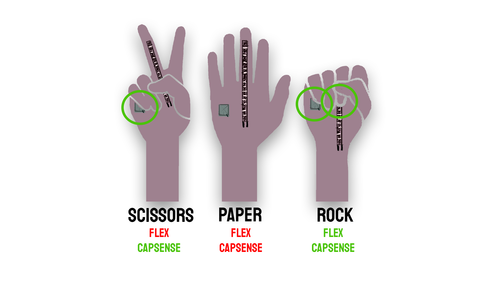
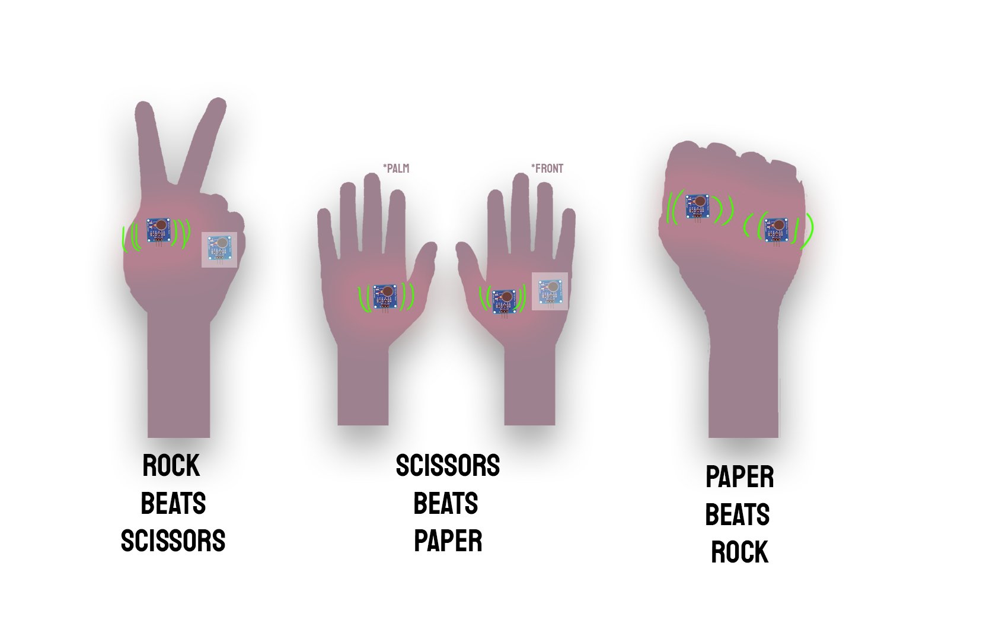

Rock Paper Scissors
For the course Foundations of Interaction Technology we had to develop a prototype for an interactive at a distance touch interaction, using haptic feedback. This project uses Arduino, Processing and a number of sensors to simulate a tic tac toe interaction at a distance. The combination of flex sensor and capacitative sensor can detect which motion is made. The algorithm then decides who won and who lost. According to who won and with which action they won, a different vibraiton is activated, to simulate the hand of the opponent performing the action.
 
In collaboration with Nicky Ter Maat